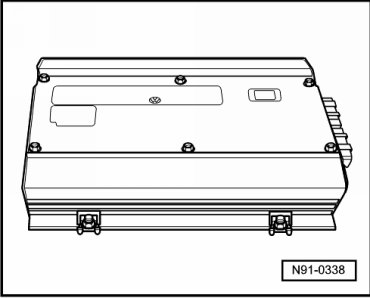

Amplifier: Description and Operation
Sound 1 and Sound 2 Sound Systems Amplifier

• Before troubleshooting or servicing, the technicians must be familiar with the function and operation of the radio unit and radio navigation system.
• For additional information. Refer to --> Operating instructions.
• When performing servicing work or Fault-Finding, use Vehicle Diagnosis, Testing and Information System (VAS 5051) or Vehicle Diagnosis and Service System (VAS 5052) in " Guided Fault Finding" function.
• When the battery is reconnected, check any affected system or component (radio, clock, comfort electrical connection etc..) according to the repair information and/or the operating instructions.
The amplifiers for the "Sound 1" and "Sound 2" sound systems expand the sound of radio units or radio navigation systems.
They can be obtained for the corresponding appropriate radio units and radio navigation systems as special equipment.
The amplifier for the "Sound 1" system is produced with 8-channel technology.
The amplifier for the "Sound 2" system is produced with 12-channel technology.
The 8-channel amplifier is controlled via the radio unit or radio navigation system using analog technology.
The 12-channel amplifier is controlled via the radio unit or radio navigation system with assistance from the CAN bus in digital technology. This amplifier contains "Digital Sound Processing" (DSP).
The "Sound 1" system is installed as special equipment for the "Delta" radio.
The "Sound 2" system is used as special equipment with the "Radio Navigation System 2" with 6.5 inch color display.
The amplifier is installed in the luggage compartment behind the right side trim.
Remove and install amplifier. Refer to --> [ Sound System Amplifier ] Sound System Amplifier.